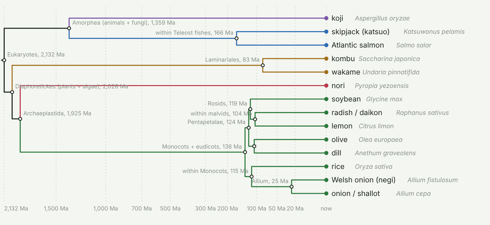

Phylodiet scores a meal by the phylogenetic diversity of what is on it. Paste a recipe or name a dish; every ingredient is mapped to the organism it came from, the tree of edible eukaryotes is pruned to what is on the plate, and the branch lengths are added up: millions of years of evolution per meal.
Open Phylodiet Free. Runs in your browser; nothing you type is sent anywhere. English and Spanish.
Not a paleo diet, a phylo diet: the score rewards eating across the tree of life rather than deep in one branch. The number is Faith's phylogenetic diversity, the standard measure used in conservation biology, computed over a dated tree of about 3,300 edible species assembled from published chronograms. The tree, the dish table and the code are open and in the repository, with a changelog of every node age that a specialist has reviewed.